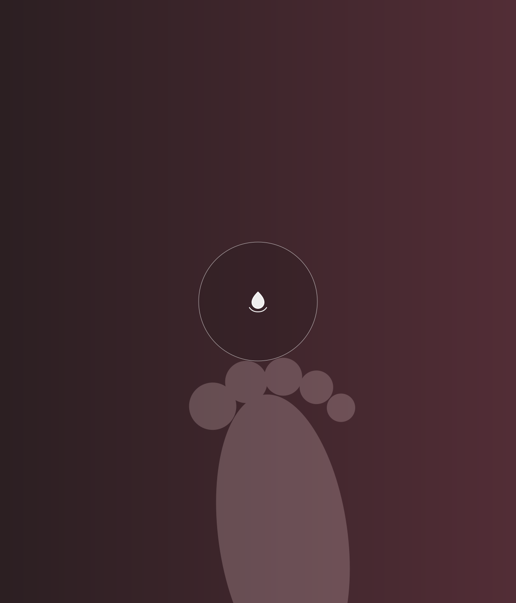
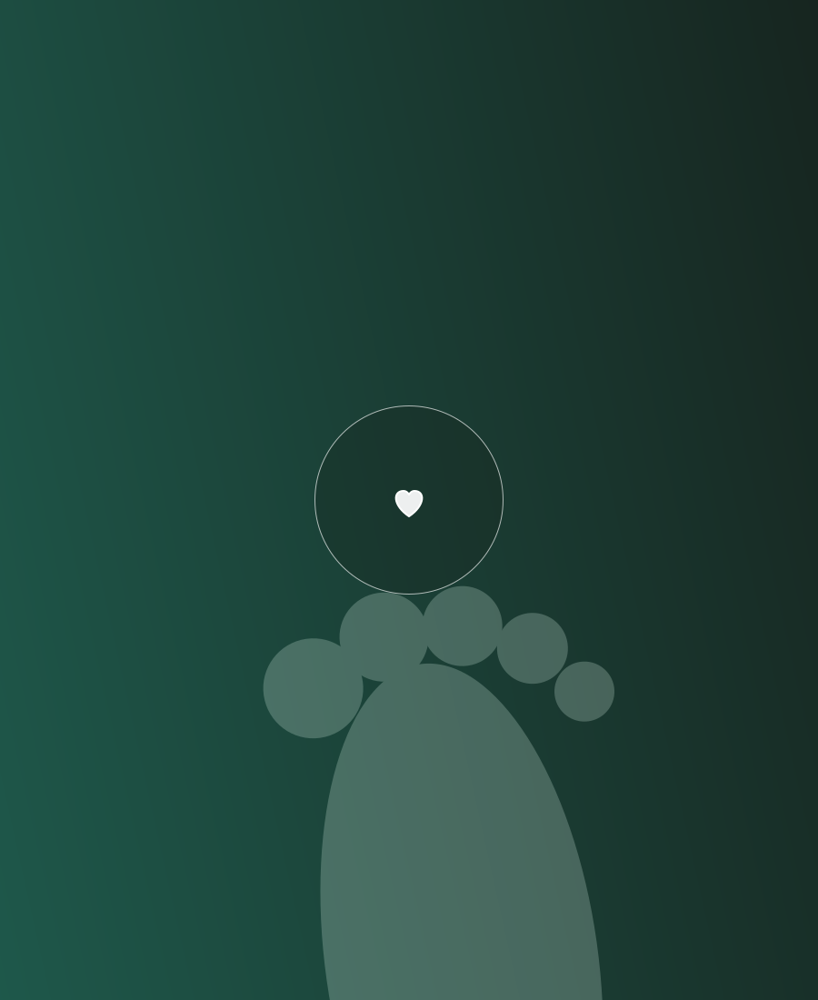
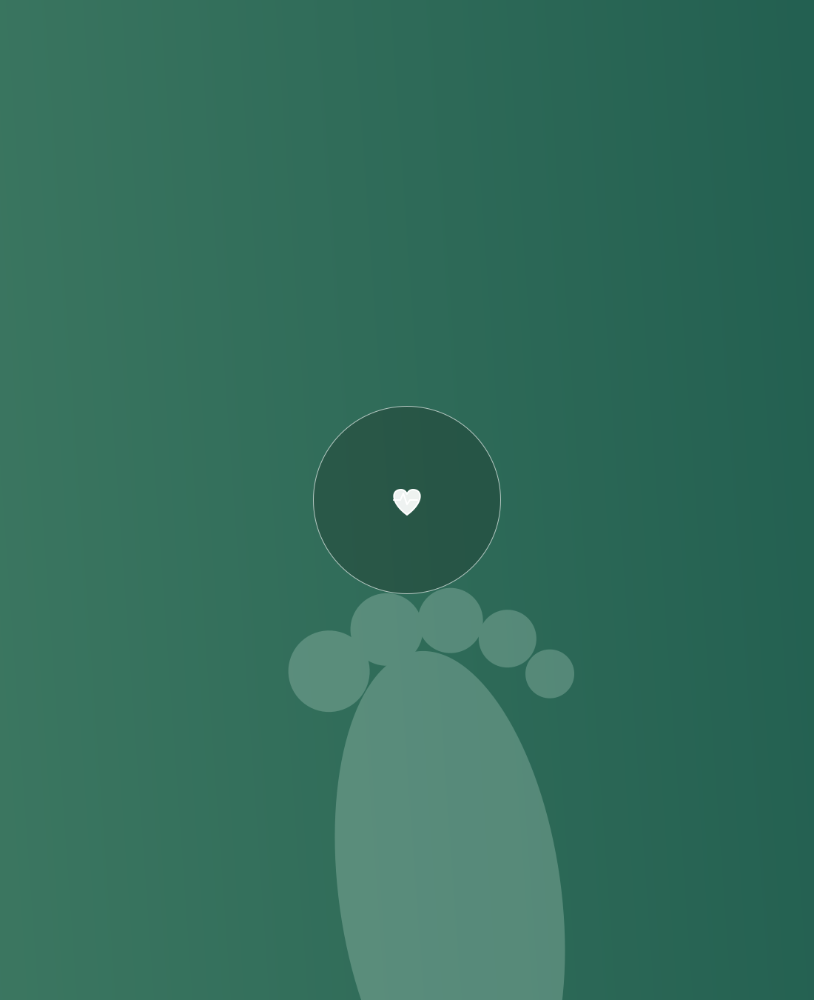

“
★★★★★
Fui atendida com muita atenção e cuidado. Elisabete explicou cada etapa e transmitiu muita segurança.Maria A.Podologia preventiva
Atendimento podológico individualizado para prevenir desconfortos, cuidar das unhas e preservar a saúde dos seus pés.


Elisabete Gonçalves é podóloga formada pelo Senac Ribeirão Preto e dedica seu trabalho à prevenção, saúde e conforto dos pés. Cada atendimento é realizado com atenção, higiene e respeito às necessidades individuais de cada paciente.

Pessoas com diabetes precisam de cuidados frequentes com a pele, as unhas e possíveis pontos de pressão. O acompanhamento podológico preventivo auxilia na identificação de alterações e na manutenção da saúde dos pés.
O atendimento podológico não substitui acompanhamento médico.
Agendar atendimento especializado →Fui atendida com muita atenção e cuidado. Elisabete explicou cada etapa e transmitiu muita segurança.Maria A.Podologia preventiva
Procurei atendimento por causa de uma unha encravada e fui muito bem orientada durante todo o procedimento.Ana C.Unha encravada
O atendimento foi delicado, pontual e muito profissional. Recomendo para quem busca cuidado de verdade com os pés.João R.Cuidados podológicos
Agende uma avaliação podológica e receba um atendimento cuidadoso, profissional e individualizado.